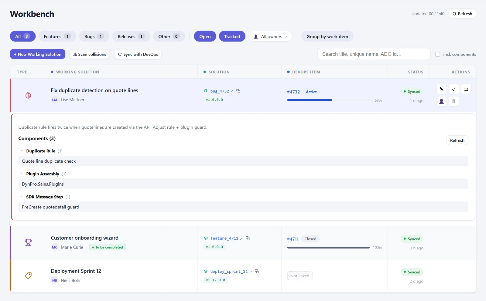
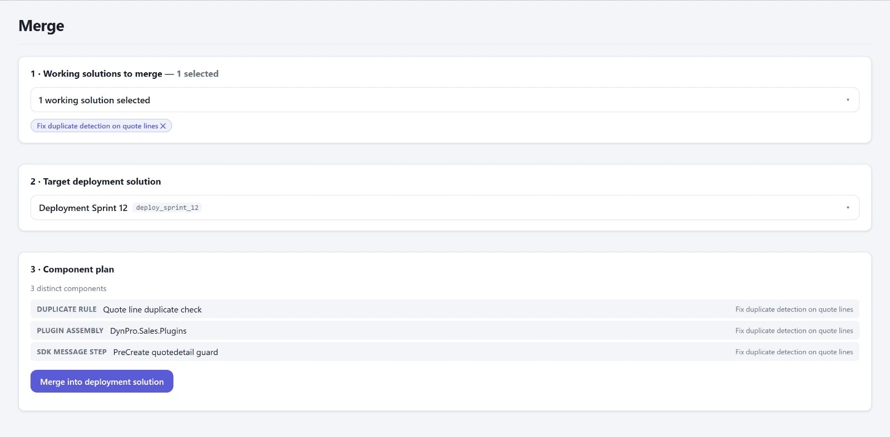

On my client engagements, development has followed the same pattern for years. Every work item in Azure DevOps gets its own unmanaged solution, unique name feature_4711 or bug_4712. Everything that belongs to the topic goes in there. When the topic is done, its content moves into the release solution, and that goes through the environment chain as a managed package. It is the closest thing to feature branches that Dataverse offers, and it works.
What doesn't work is everything around it.

Forty solutions and an Excel list
After three months the maker portal shows forty solutions with names like feature_4711, and without DevOps nobody knows anymore what 4711 was, whether it is already in the release, or who owns it. Two colleagues change the same form in two solutions, and whoever deploys last overwrites the other. You only notice when a field is missing in UAT.
And then the merge itself. In the maker portal, open the release solution, click “Add existing”, then go type by type, component by component, and for every table decide whether all subcomponents should come along. With thirty components that is half an hour, with three hundred an afternoon. Afterwards nobody can say exactly what was added, and you write the release notes from memory.
For years I handled this with an Excel list that mapped solutions to work items, and with XrmToolBox. Its Solution Components Mover moves components between solutions, and it does that reasonably well. But it knows nothing about work items, states, or what has already been merged. And the spreadsheet did not maintain itself. After two releases the list was out of date, and from then on it was worse than none, because people still believed it.
After two releases the list was out of date, and from then on it was worse than none, because people still believed it.
A Working Solution is two things
I made the first commit on June 10, 2026. Back then the app was called Solution Forge, and the name lasted one day. The core idea has not changed since: a Working Solution consists of a record with title, type, DevOps ID, owner and deployment status, and of the actual unmanaged solution that holds the components. Creating one creates both in a single step, and the unique name still follows the convention. Solutions that someone created by going around the tool stay visible and are sorted in by their name.
That was the end of the Excel list. The Workbench shows the list with filters for feature, bug and release, and with search across title, unique name and DevOps ID. A toggle also searches the components of all open solutions, which answers the question I was asked most often on the project: which solution is this table in? The collision radar came on the second day. It loads the components of all open solutions and flags every one that sits in more than one. That is exactly where someone later overwrites someone else.

The merge picks a release solution as the target, then the feature and bug solutions, shows the component plan with conflicts and duplicates, and merges. Every run writes a history row with the components it added. Since June 22 the release notes are generated from this history, incrementally from the second time on. That was not a planned feature. The data was simply there.

On top of that came a cloud flow that writes the status of the work items back into the Working Solutions. If a work item is Done but its solution is still open, the list flags it. I had planned more DevOps integration, and a panel was already built. It failed on the tenant: the OAuth token came from my account's home tenant, the DevOps organization belonged to a different one, error TF400813, and a guest membership does not help there. The panel has been switched off since June 11 and is waiting for a service principal.
What it changed
The merge takes minutes instead of an afternoon, and afterwards it is clear what was added. The release notes come for free. You see collisions before anyone deploys. For two weeks now the console has been in daily use at a customer in automation engineering, with three environments and a team that used to keep the Excel list.
What the Workbench does not answer: whether the import goes through in the target. That is what the second part is about. All Workbench features are listed on the product page.
Addendum, August 2: the bug you don't see
The merge had been in daily use for two months, and it had a bug you don't see. The component list came from the same table the maker portal uses for its object list. That table collapses subcomponents under their table. So for a table, a merge based on it copied only the shell and left behind the columns, forms and views that were explicitly included in the source. No error message. After all, the component was in the target.
The duplicate check was even worse. If the target already held the table as a shell and the source held it with all subcomponents, the merge skipped it as a duplicate. On August 1 I saw this live on a table whose columns were missing from the release. Since August 2 a pure function with tests decides what happens to each component: add, widen, skip, or excluded. Widening means the existing row is upgraded in place to “all subcomponents”. Dataverse never downgrades in the process, so repeating the call carries no risk.
A side effect that made me doubt myself for a moment: after widening, the row count of the target solution goes down. Three rows, the shell plus two explicit columns, become one row with everything. Fewer rows, more content. If you use component counts as a measure of success, you will read that as a loss.
Addendum, September 16: zero percent
On large releases the merge sat at zero percent for minutes, because before the first step it fully resolved the release solution, with names for every column, every form, every view. None of that was displayed. The decision only needs the ID and the behavior of the row. Now it reads the target raw, takes the sources from the Workbench plan, and progress moves from the first second. The calls themselves still run one after another. Running them in parallel would probably work, but not without first checking how Dataverse locks the target solution.